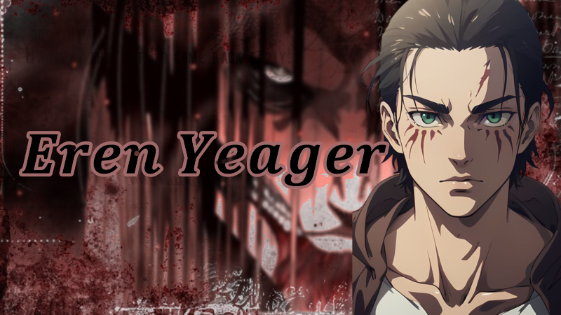
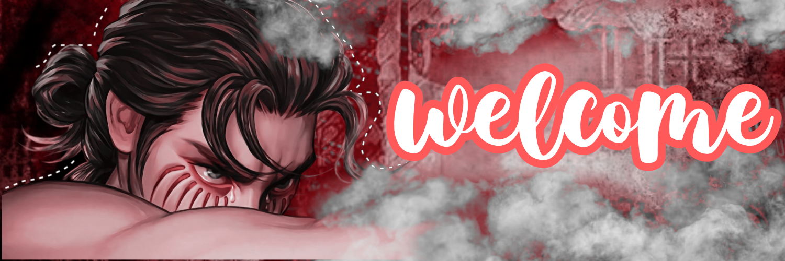
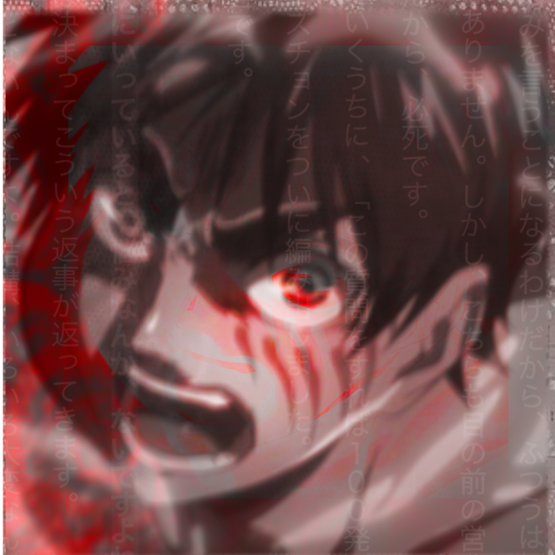

Eren Yeager
ATK | Theme | Stats
Anime: 進撃の巨人 | Animation studio:Wit Studio/MAPPA


ATK | Theme | Stats
Eren activó el poder del Titán Fundador, liberando a los colosales titanes de los muros y dirigiéndolos hacia el mundo exterior con la intención de erradicar a sus enemigos. Este acto representó uno de los momentos más impactantes y devastadores de la serie.
A través de los recuerdos de su padre y la información en el sótano de su casa, Eren reveló a la humanidad dentro de los muros la verdadera historia: que eran descendientes de los eldianos y que el mundo exterior los veía como demonios, lo que cambió completamente su perspectiva y motivaciones.

Eren Yeager es el protagonista de Shingeki no Kyojin (Attack on Titan). Nacido dentro de los muros de Paradis, creció con un fuerte deseo de explorar el mundo exterior, creyendo que la humanidad estaba atrapada injustamente. Su vida cambió drásticamente cuando los titanes atacaron su ciudad natal, lo que lo llevó a unirse al Cuerpo de Exploración con el sueño de exterminar a todos los titanes. A lo largo de la serie, su visión del mundo evoluciona de manera drástica, pasando de ser un héroe idealista a un antihéroe con métodos extremos para alcanzar la libertad.
Eren descubrió que poseía el poder de los titanes después de ser devorado y posteriormente regenerarse en su forma titánica. Con el tiempo, se reveló que había heredado el Titán de Ataque, el Titán Fundador y el Titán Martillo de Guerra. A medida que avanza la historia, su lucha se transforma en una batalla ideológica, donde toma la decisión de destruir a casi toda la humanidad fuera de los muros con el Rugido de la Tierra, creyendo que esa era la única forma de garantizar la supervivencia de su gente. Sin embargo, es finalmente detenido por sus amigos de la Legión de Exploración.
EREN NIÑO
EREN JOVEN
EREN ADULTO